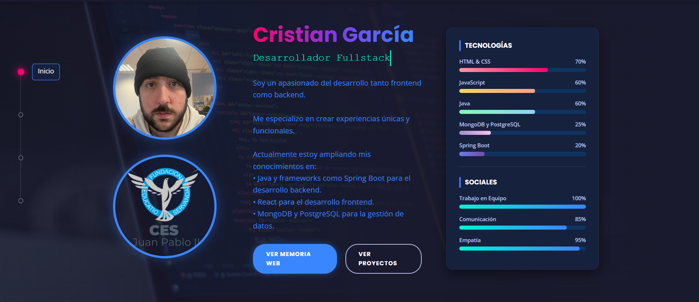
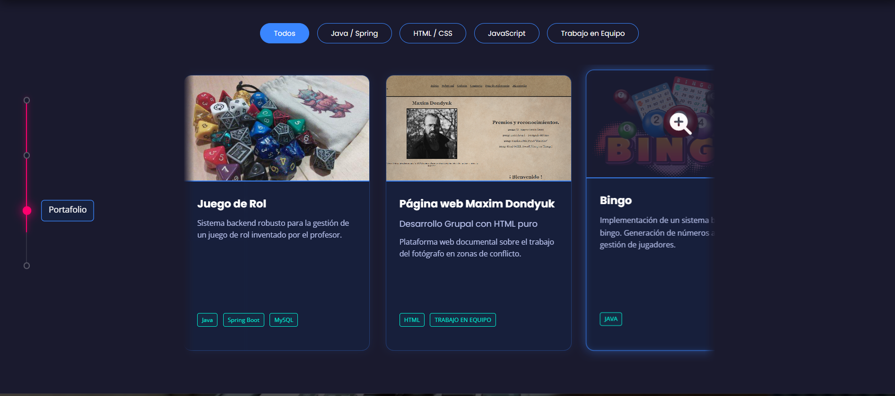
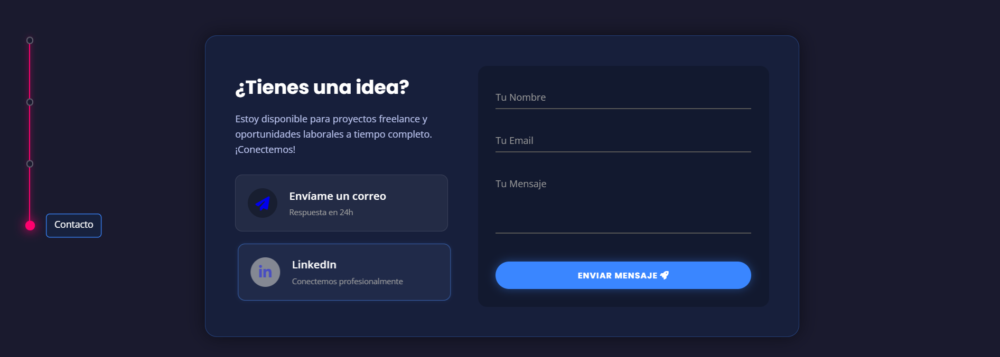
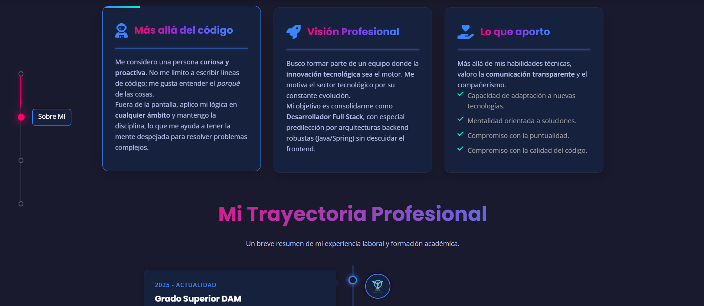
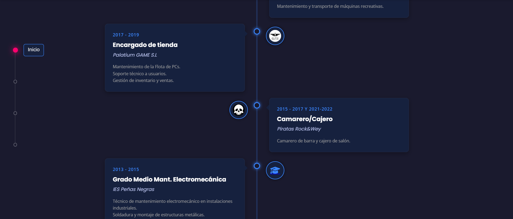

Memoria del Proyecto
Portfolio Web Personal
Autor: Cristian García
Centro: CES Juan Pablo II
Fecha: Febrero 2025
2. Resumen
EEste proyecto consiste en el diseño y desarrollo de una aplicación web personal tipo que se quiera, en mí caso seria un estilo "Portfolio One Page". El objetivo principal es mostrar mis competencias como desarrollador Fullstack, presentando mi trayectoria académica, experiencia laboral y proyectos realizados. Se ha optado por una estética moderna ("Cyberpunk/Neón") para demostrar CSS y animaciones, asegurando a su vez una navegación fluida e intuitiva mediante JavaScript.
3. Índice
- 1. Portada
- 2. Resumen
- 4. Introducción
- 5. Metodología
- 6. Desarrollo e Implementación
- 7. Resultados
- 8. Discusión
- 9. Conclusiones
- 10. Bibliografía
4. Introducción
En el competitivo mundo del desarrollo web, destacar es crucial. Este proyecto aborda la necesidad de tener una presencia online que no solo informe, sino que demuestre capacidades técnicas.
Objetivo General: Crear una web responsive, interactiva y moderna.
Objetivos Específicos: Implementar animaciones CSS avanzadas, manipulación de JS y un diseño adaptable a móviles.
5. Metodología
Se ha utilizado una metodología de desarrollo incremental. Las tecnologías empleadas han sido:
- HTML5: Para la estructura semántica.
- CSS3: Variables CSS, Flexbox, Grid y animaciones Keyframes.
- JavaScript (ES6): Lógica de carrusel, observadores de intersección y eventos táctiles.
6. Desarrollo e Implementación
El desarrollo se dividió en bloques: Header, Hero, Timeline, Carrusel y Contacto. A continuación se detallan las propiedades CSS clave:
Fondo Neón y Variables
:root { --color-primario: #3a86ff; }
Uso de variables para mantener la coherencia de color en toda la web.


Efecto Glassmorphism
backdrop-filter: blur(10px); background: rgba(...);
Aplicado en las tarjetas del portafolio y el formulario de contacto.


Animación Timeline
transform: translateY(0); transition: all 0.8s;
Usado junto a IntersectionObserver en JS para animar la entrada de elementos.


7. Resultados
El resultado final es una aplicación web SPA (Single Page Application) totalmente funcional.


8. Discusión
El mayor desafío fue lograr que la animación de la línea de tiempo fuera reversible sin romper la maquetación. Se solucionó cambiando las transformaciones laterales (translateX) por verticales (translateY) y usando opacidad, lo que estabilizó el diseño en todas las resoluciones.
9. Conclusiones
Se ha logrado crear una interfaz inmersiva. He aprendido a manejar en JavaScript sin librerías externas y a estructurar CSS moderno mediante variables.
10. Bibliografía
- Font Awesome para iconografía.
- Google Fonts (Poppins & Open Sans).
- Unsplash (Imágenes de recurso).
- Gemini (Consultas puntuales de lógica JS).